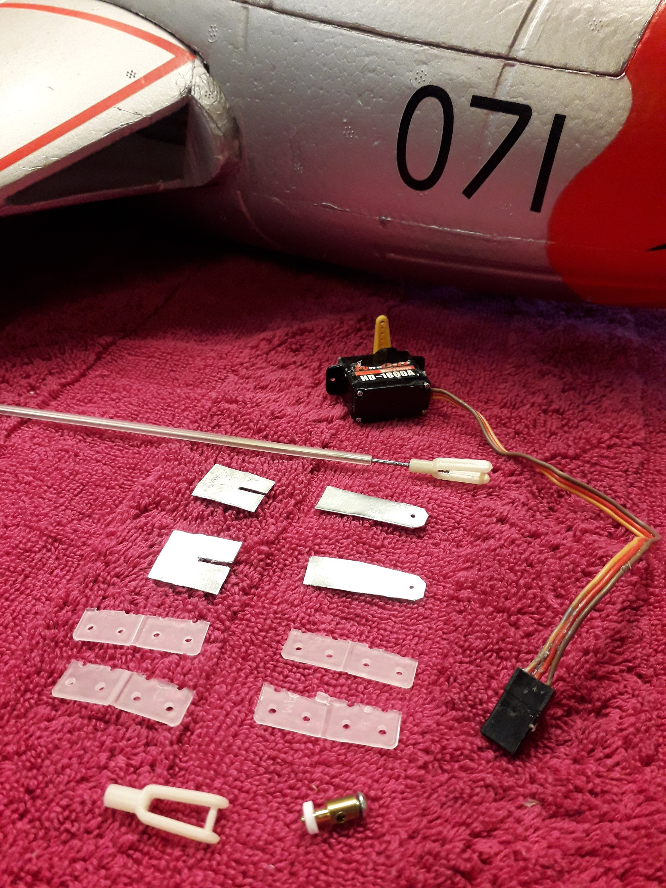
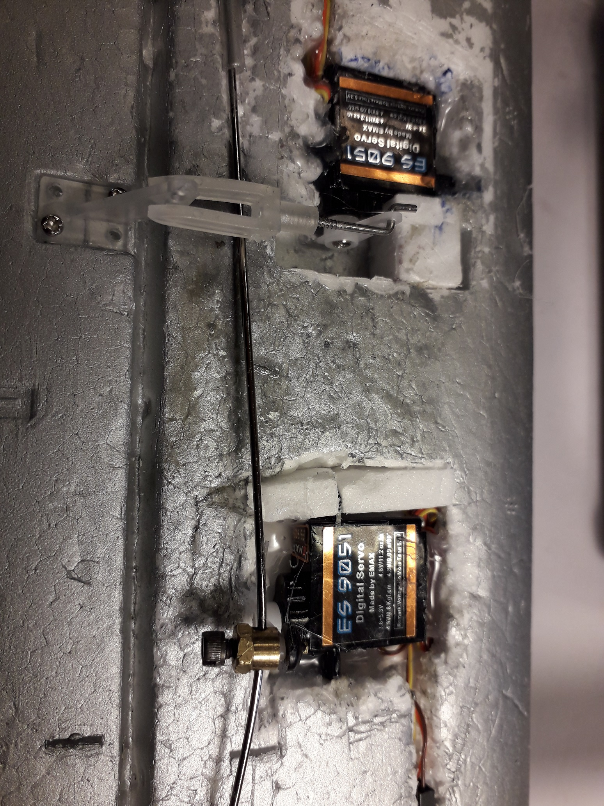
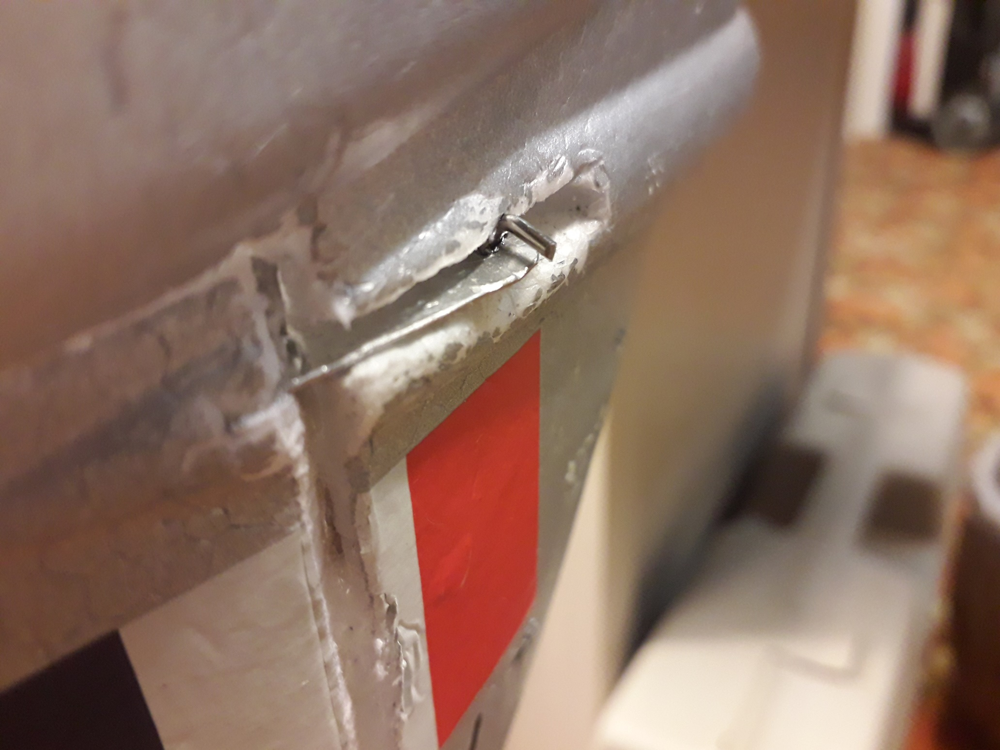
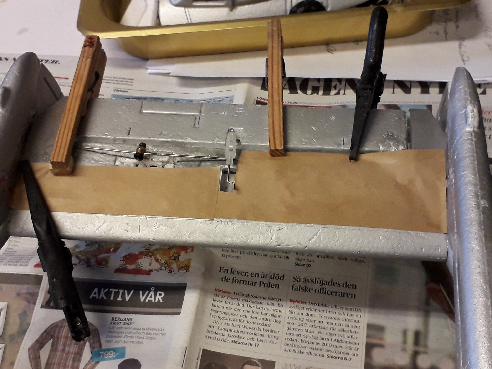
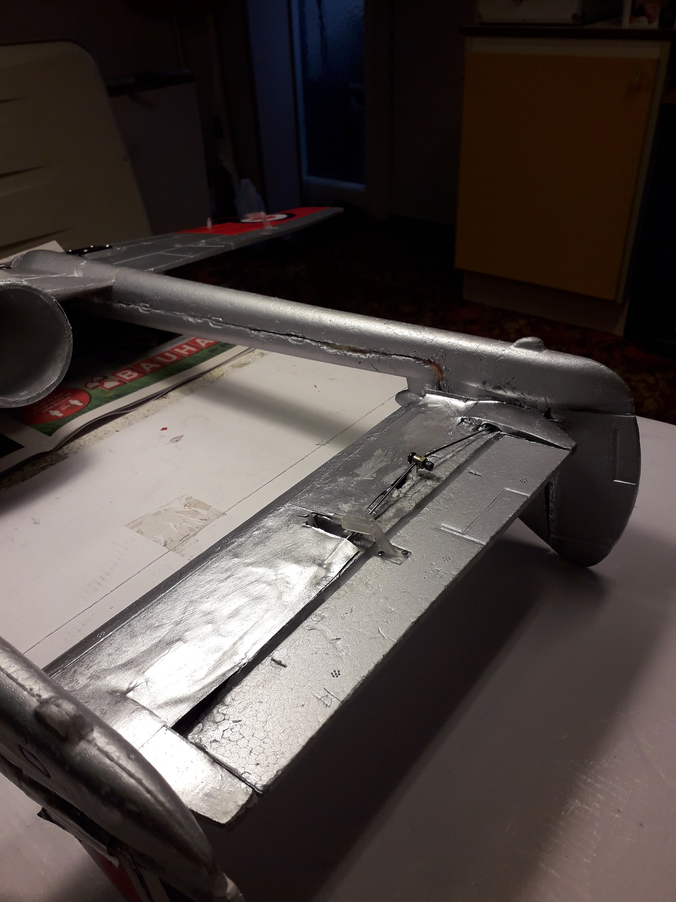

Build rudders
on Durafly D.H. 100
Vampire MK 6
The model, as delivered, has no rudders. The
full size Vampire has two.
I have flown a Durafly Vampire during several years and I have
missed the rudder
Now I have bought a second Durafly Vampire
(Canadian version) and I modified it
to have two working rudders.
Rudder design
An extra servo, mounted in the stabilizer, controls both rudders
with a pushrod.
The hinges are two half's of a nylon hinge per rudder.
The control horns,which I made myself from aluminum plate and
CA-glue,
points forward, inside the tail boom.

Rudder horn drawing
The rear parts of the stabilizer, beside the elevator, need
strengthening around the push rod hole.
See pictures below.


To get the CG more forward I use 4.1 gram servos for the
rudder and the elevator.

Right push rod connection

Left push rod connection

Hood made of brown paper

The servo installation is hidden with brown paper and white
glue/water 50/50.

Painted and ready!

Bill of material
- 1 pcs push rod of 1 mm piano wire threaded
in one end
- 1 pcs of plastic tube for the push rod
above
- 1 pcs servo link for the thread above
- 1 pcs E/Z connector (Push rod connector)
- 2 pcs digital servos
ES9051 EMax ES9051D 0.8 kpxcm, 4.3 g,
0.09 s
- Brown paper and white glue
- Balsa to strengthen the stabilizer
- Aluminum plate 0.5 mm for rudder horns
- 2 pcs nylon hinges
- Color: silver or aluminum
Building instructions
Replace the elevator servo with an ES9051
servo.
Cut out the rudders from the fins.
Make
the rudder horns from the aluminum plate (CA glue).
Glue
the rudder horns and the hinges to the
rudders.
Cut out
some space for the rudder horns in the fins. (= the
end of the tail booms).
Cut out a pocket for the
rudder servo and mount it provisionally.
Make a
hole for the push rod ,with its tube and glue the
tube to the stabilizer.
Mount the servo
link on the push rod (half way on the threads) and
mount the E/Z
connector.
Glue the left rudder to it's fin and connect the servo link
to the rudder horn.
Mount the right
rudder provisionally
in it's fin and decide where the push rod should be
bent
to give both rudders the same deviations.
Disconnect the servo link on the left rudder and bend the
push rod at the right end.
Glue
the right rudder to it's fin with the hinges when
the rudder horn is connected to the push rod.
Connect the left servo link again and adjust as
needed.
Mount the rudder servo permanently.
Make the balsa
reinforcements for the stabilizer and glue
them in place.
Make the hoods of brown paper and glue
them in place.
Cover the servo
installation with brown paper and white glue / water 50/50.
Paint the brown paper with silver or aluminum color.
All set, I believe.